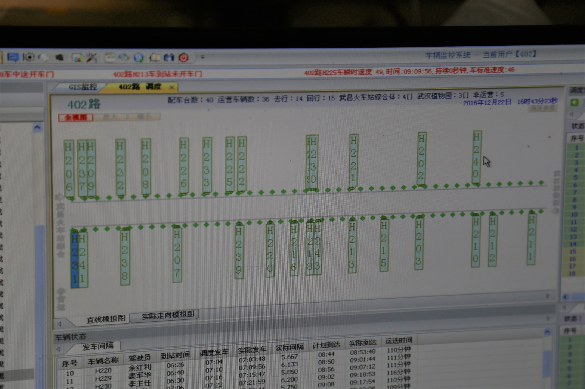

402是一条旅游线路，它几乎经过了武汉每一个值得一去的地方。从人声鼎沸的武昌火车站出发，先后穿行于长江上的一桥二桥，路过黄鹤楼和古琴台，在洋气的租界区盘桓，穿过最繁华的商业区，绕过大半个东湖，以及东湖之滨的武汉大学，最后到达植物园——即使在不堵车的情况下，单程也要两个多小时。
司机王俊说，2003年线路刚开通的时候，车费高达5元，车上还配有导游，游客却寥寥。如今除了心血来潮的闲人，已不会有人浪费大好光阴从头坐到尾。但也还是会有人不熟线路，“被游”汉阳汉口。曾有急着赶火车的外来务工人员，从徐东大街坐上402，到了武昌站时火车已经开走了好久。武大学生间也流传着“从火车站坐402回学校，结果四公里直线路程走了一个半小时”这样的笑谈。
不过，更多的乘客还是来往于武汉三镇的普通市民。戴着方檐休闲帽和黑框眼镜的爷爷，拿出放大镜仔细地看着翻盖手机的屏幕；穿白色羽绒服的阿姨，戴着银色耳环，还涂了一点口红，正出神地看着窗外；入夜时分，后座穿着黑色大衣的年轻人头歪在车窗上睡着了；窗外民主一街的拐角，几个穿着校服的中学女生在路边小摊上买油炸香肠。
坊间传言，武汉的公交司机能把公交开出坦克的感觉。但坐上一辆402，你的第一感觉却会是“舒服”——干净整洁的座位，轻声环绕的音乐广播，如果再有幸遇到江城冬日下午的阳光，波光粼粼的东湖和远处若隐若现的磨山，你就会开始相信402 “武汉最美公交线”之名名不虚传。
“有人说最安全的交通工具是飞机，”在停车间隙，司机田吉雄说道，“但我觉得应该是公交车才对。”
武汉是一座有着330条公交线路，6993台公交车，13条汽渡线，每年开通两条地铁线的城市。如今，武汉城市一卡通的发行量已经超过了一千万份。有40辆公交车，55位司机和3位调度员工作在402这条线路上，最早的一班车凌晨5点50分从武汉植物园发出，沿途有46个公交站点（返程43个），平均每10分钟发一辆车，早晚高峰期会缩短到6分钟，发车时间误差基本在几秒以内。
5点50分的首班车，也就意味着开接班车的司机四点多必须起床， 5点半把同事们送到岗位，然后开始准备自己的班次，检查车内环境、油量、车胎和水箱。现在402线路使用的宇通客车，加一次油可以跑两天。
五十多人的轮班，意味着司机们每工作五天可以休息一天，调度员们每工作两天可以休息一天——但包括春节在内的所有节假日，都是他们的加班期。刚刚过去的圣诞节，武汉多条公交线路照例延时收班。而每年三四月花季，游客们一群一群地涌向东湖景区的时候，402都会增开一部分区间车，尽量把游客疏散出来。“因为我们的线路太长了，堵车的地方太多，有时候半天都没车子回来。” 王俊说。国庆期间学生出行高峰时，402也会隔一个正常班次发一个学生专线，到楚河汉街就返回，方便沿线的学生换乘去火车站。
现在公交司机工作时已经不允许接电话，有非紧急情况时调度员会给司机发短信，以便司机停车时能看到。为了不让自己开车开到一半突然想上厕所，402的司机们都会有意控制自己喝水的频率。在被问及长期早起如何保持精力时，田吉雄颇有些自豪地说：“关键是要规律。像我上早班的时候，每天四点多起床，一般晚上十一点之前就睡了。第二天下午两三点下班，回家该做什么做什么，连觉都不用补。”他的声音洪亮，身形俊朗，一点也看不出来已年近四十。
来来往往的每个人都有自己付公交费的方式。头发花白，互相搀扶着的老人，慢慢拿出红布包着的老年人证；步履匆忙的职场女性拿出皮包靠近感应机；高校集中的武昌城，最多的是边走路边看手机的年轻学生掏出红色的樱花一卡通，那是2014年开始武汉市政府赠送给每一位武汉的大学新生的；身体留着大面积烧伤痕迹和浮肿的残疾人，带着音箱和话筒上车卖唱，也不用买票，唱完后会留下一句“谢谢师傅，祝大家一路平安”；而 402的司机们，最近也开始教好奇的乘客们用刚在武汉公交试行的支付宝付款—— “在支付宝的城市服务-公交付款那里，要先开通一下才能用。”
一夜之间红透大江南北的直播行业，也和402路有过交集。今年8月底，武汉公交集团和新浪湖北邀请了“武汉黑人司机”等数十名网络红人和微博粉丝，登上精心装饰的402路直播车。车内座椅靠背上印着“学霸专座”、“吃货专座”、“岔巴子专座”等。体验员们用360度全景手机拍摄沿途美景，并在新浪微博直播。据说，402还将制作首个公交VR视频。
得益于时代的进步，公交的管理也早进入了信息时代。每一辆车上都装有GPS、视频监控和一键报警装置。在武昌火车站公交广场旁的调度中心里，402线路调度员王智霖的电脑桌面上动态显示着所有车辆的信息，“蓝色的方块表示车辆在终点站待命，浅绿色的表示车辆正在行驶，而深绿色表示正在到站停车。”王智霖介绍道。在被问及没有信息化管理之前的公交调度是什么样时，他笑了一下：“那时就是用本子不停地记，如果司机没有按时到站就得打电话问。”

2008年，一场持续了40多天的冰灾席卷了半个中国，武汉是重灾区之一。那一年路上经常结冰，司机们开车都特别谨慎，甚至有点怕。但市民要出行，不敢开车也必须要开。
“那天晚上大概七点多吧，一进东湖风光村我的电话就来了，调度说，你不要进风光村，那里面整个都成了冰面了！”开公交二十年，王俊对那个乘客不多的冬夜依然记忆犹新， “我说我没办法，我已经进了风光村。那没办法那我只能慢慢走。”最后，风光村到植物园原本十分钟的路程，他一点一点地挪了四十多分钟。
生活在此地的人大概很少会关注此地的历史。只有大老远跑过来的外地游客，才会无端慨叹“晴川历历汉阳树，芳草萋萋鹦鹉洲”，才会在402上问旁边的学生，想逛逛武大该在哪一站下车。从远方过来，熬了二十几个小时无座火车的新疆小伙，得知火车正经过长江大桥时，会开心地叫他的妻子起来看，他们已经在地板上相拥着睡了一整夜；而在火车桥上方，又一次坐着402回武昌的学生，会告诉旁边座位上的奶奶，桥下岸边那一片是汉口江滩公园，半个月前芦苇还没割掉的时候，一大片一大片的特别好看。
为了配合东湖绿道的建设，如今402已经不经过东湖东路那条漂亮的水杉长廊。
当Y243号402车又一次经过东湖风光村时，坐在驾驶台上的司机田吉雄说：“等绿道建好了，一定要进去看一看。”
（文字：江海 常文 摄影：江海）